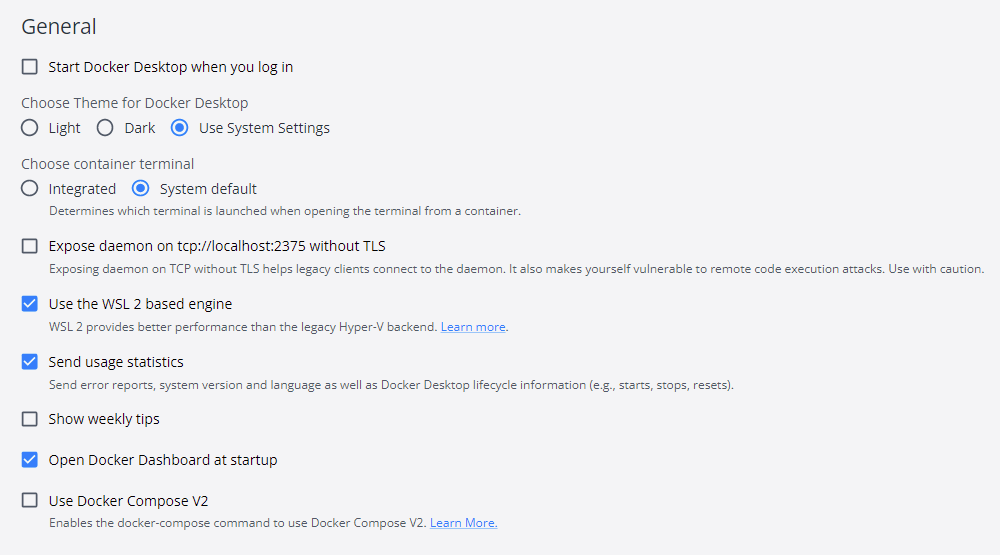

Preparation
Installing cli tools
Install/download the CLIs.
choco install kind
choco install k3d
choco install base64
choco install mkcert
choco install kubernetes-cli
choco install kubernetes-helm
choco install linkerd2
choco install argocd-cli
choco install flux
choco install terraform
choco install terraform-docs
sudo apt-get update
sudo apt-get install -y apt-transport-https ca-certificates curl wget libnss3-tools cl-base64
# kind (if needed) (https://kind.sigs.k8s.io/docs/user/quick-start/#installing-from-release-binaries)
curl -Lo ./kind https://kind.sigs.k8s.io/dl/v0.17.0/kind-linux-amd64
chmod +x ./kind
mv ./kind /usr/local/bin/kind
# mkcert (if needed) (https://github.com/FiloSottile/mkcert#linux)
curl -JLO "https://dl.filippo.io/mkcert/latest?for=linux/amd64"
chmod +x mkcert-v*-linux-amd64
sudo cp mkcert-v*-linux-amd64 /usr/local/bin/mkcert
# kubctl (https://helm.sh/docs/intro/install/#from-apt-debianubuntu)
sudo curl -fsSLo /usr/share/keyrings/kubernetes-archive-keyring.gpg https://packages.cloud.google.com/apt/doc/apt-key.gpg
echo "deb [signed-by=/usr/share/keyrings/kubernetes-archive-keyring.gpg] https://apt.kubernetes.io/ kubernetes-xenial main" | sudo tee /etc/apt/sources.list.d/kubernetes.list
sudo apt-get update
sudo apt-get install -y kubectl
# helm (https://helm.sh/docs/intro/install/#from-apt-debianubuntu)
curl https://baltocdn.com/helm/signing.asc | gpg --dearmor | sudo tee /usr/share/keyrings/helm.gpg > /dev/null
sudo apt-get install apt-transport-https --yes
echo "deb [arch=$(dpkg --print-architecture) signed-by=/usr/share/keyrings/helm.gpg] https://baltocdn.com/helm/stable/debian/ all main" | sudo tee /etc/apt/sources.list.d/helm-stable-debian.list
sudo apt-get update
sudo apt-get install helm
# argocd (if needed) (https://argo-cd.readthedocs.io/en/stable/cli_installation/#download-latest-version)
curl -sSL -o argocd-linux-amd64 https://github.com/argoproj/argo-cd/releases/latest/download/argocd-linux-amd64
sudo install -m 555 argocd-linux-amd64 /usr/local/bin/argocd
rm argocd-linux-amd64
# flux (https://fluxcd.io/flux/installation/#install-the-flux-cli)
curl -s https://fluxcd.io/install.sh | sudo bash
#linkerd (https://linkerd.io/2.12/getting-started/#step-1-install-the-cli)
curl -sL https://run.linkerd.io/install | sh
export PATH=$PATH:~/.linkerd2/bin
#k3d (if needed) (https://k3d.io/v5.4.6/#install-script)
wget -q -O - https://raw.githubusercontent.com/rancher/k3d/main/install.sh | bash
# terraform (https://developer.hashicorp.com/terraform/downloads)
wget -O- https://apt.releases.hashicorp.com/gpg | gpg --dearmor | sudo tee /usr/share/keyrings/hashicorp-archive-keyring.gpg
echo "deb [signed-by=/usr/share/keyrings/hashicorp-archive-keyring.gpg] https://apt.releases.hashicorp.com $(lsb_release -cs) main" | sudo tee /etc/apt/sources.list.d/hashicorp.list
sudo apt update && sudo apt install terraform
wget https://github.com/terraform-docs/terraform-docs/releases/download/v0.16.0/terraform-docs-v0.16.0-linux-amd64.tar.gz && \
tar -xzvf ./terraform-docs-v0.16.0-linux-amd64.tar.gz && \
rm ./terraform-docs-v0.16.0-linux-amd64.tar.gz && \
chmod +x ./terraform-docs && \
sudo mv ./terraform-docs /usr/local/bin/terraform-docs
Docker environment
Docker Desktop
Warning
To use Docker Desktop commercially you'll need a commercial license.
Run the installer from Docker Desktop.
To add WSL2 support to your k8s cluster of Docker Desktop, read the details in the official blog
After installation, make sure you enable WSL2 in the settings

Rancher Desktop
Just run the installer from Rancher Desktop.